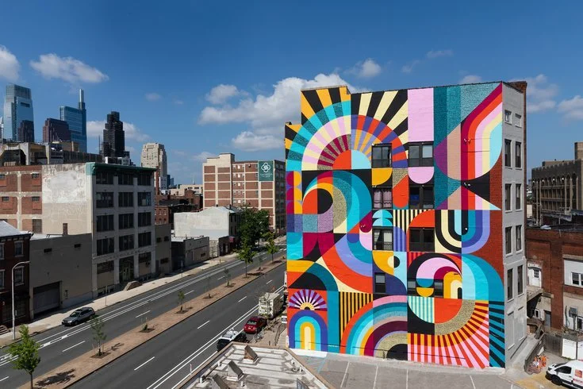
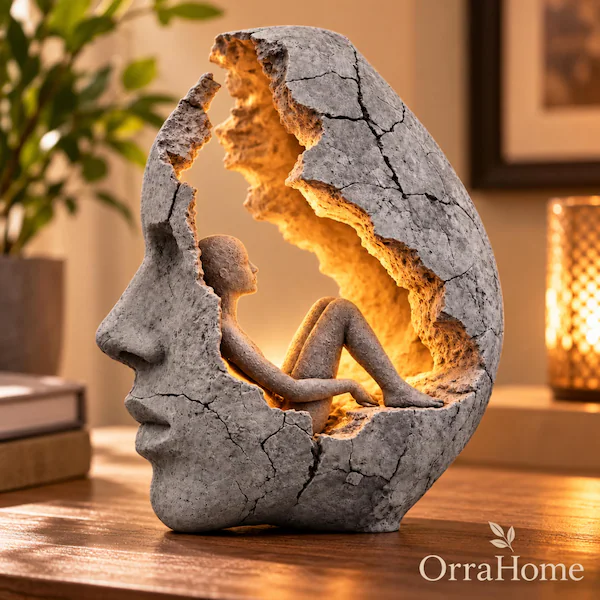
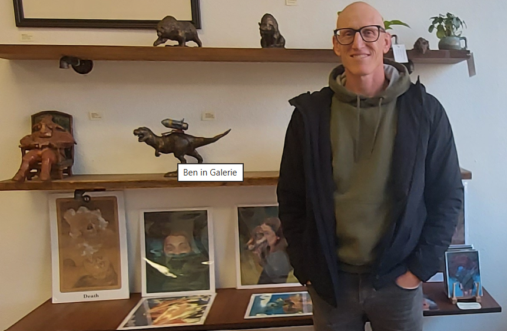

Color and Light
Exploring color through an everyday perspective.
Art can be found in galleries, parks, streets, schools, and everyday places. Everyday Art helps people discover creative work and emerging artists.

Exploring color through an everyday perspective.

Art that becomes part of the community.
Finding beauty in the landscapes around us.

Fremont artist Ben Vose rediscovered his passion for art and created Galerie Artax in Niles, bringing artists and the community together through exhibitions, workshops, and creative events.
Photo: Monika Lee / Tri-City Voice